RVQ 开环 ADE 更小 · T21370
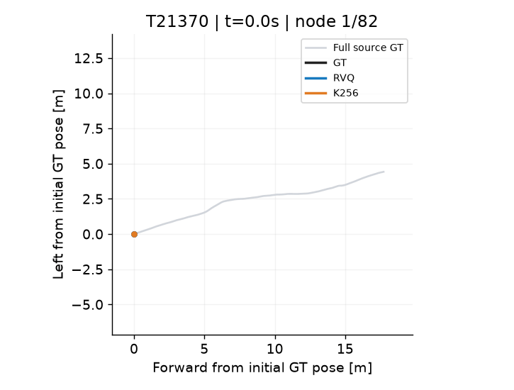
原始 GT 150 路点；RVQ 82 个保留观测节点，K256 对照也为 82 个节点（运动步均为节点数−1）。
开环 ADE：RVQ 0.46 m，K256 1.21 m；终点 FDE：0.72 / 2.85 m。GT 路程 18.4 m。
该轨迹满足完整宏动作与量化微动作约束。
smooth_path_test_filter · 2026-10-26 · 固定已有码本，仅评估重建，不在本数据上拟合码本 · 不含 Object / Pointing
单位米已确认；相机姿态按 T_world_camera 解释，该约定由源数据统计核对推断。以下误差以此坐标解释为前提。
在完全相同的宏动作节点上，RVQ 的局部 H5 位置误差为 2.36 cm，K256 为 8.09 cm。整段开环 ADE 为 1.45 m / 1.81 m，终点 FDE 为 3.86 m / 4.15 m（均为 RVQ / K256）。
RVQ 在位置重建上更准，朝向则略逊于 K256：首目标朝向 MAE 为 0.272° / 0.244°。相同决策次数下，RVQ 每次输出 3 个 token，K256 输出 1 个；本报告没有测量导航策略或真机成功率。
局部五路点实际覆盖多少距离？平均沿原始 GT 行进 1.30 m，录制跨度平均 1.04 s。末尾不足五点时只统计有效未来点，不把填充终点重复算入误差。
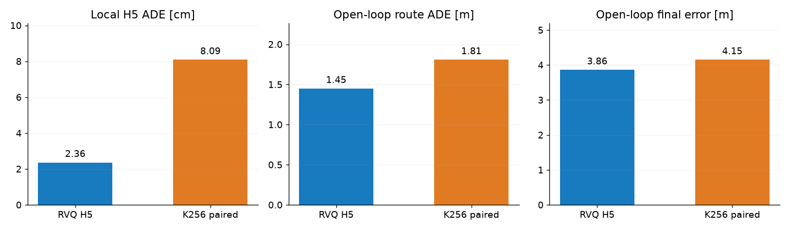
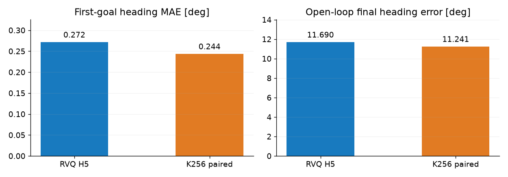
说明文件称保留 22,209 条；清单实际有 22,212 行，去重后 22,209 个路径。OSS 中有 257 个清单路径缺少轨迹文件，以及 3 条重复记录。本次编码所有实际存在的 21,952 个 TUM 文件，没有从其他数据源补造缺失轨迹。
现有采样规则下，642 条轨迹仍有微动作无法合并，共 10,130 条未解决边。编码全部保留，并单独标记；满足 GT 宏动作约束的 21,310 条轨迹均通过量化后的微动作检查，新增量化失败 0 条。诊断集合内存在的微动作不能算成已合并成功。
RVQ 保留 3,105,927 个观测节点，从原始 3,292,800 个记录节点中跳过 186,873 个中间节点。原始 TUM 文件未修改或删除。
STOP 语义边界：这些是视频片段的相机轨迹。末帧 STOP 仅表示记录片段结束，尚无“已到达导航目标”的证据；不能据此宣称获得了真实导航到达监督。
主对照让两个码本预测同一条观测序列，路径、节点数、时间戳与 GT 相同。局部 H5 对照中，RVQ 用 3 个码解出五点，K256 用随后最多 5 个增量码逐步积分出相同五点；在线逐次决策的输出开销仍为 RVQ 每次 3 个码、K256 每次 1 个码。两者均仅执行当前解码的首目标，整段积分不回填 GT 位姿。K256 原始 5 Hz 行是补充基线，其观测数量与宏动作方案不同。
| 编码/采样 | 局部 H5 ADE | 首目标朝向 MAE | 开环 ADE (m) | 终点 FDE (m) | 终点 FDE P95 (m) | 终点朝向误差 |
|---|---|---|---|---|---|---|
| RVQ H5 | 2.36 cm | 0.272° | 1.449 | 3.861 | 12.537 | 11.690° |
| K256 相同宏节点 | 8.09 cm | 0.244° | 1.808 | 4.151 | 12.568 | 11.241° |
| K256 原始 5 Hz | —（不同预测跨度） | — | 1.849 | 4.231 | 12.472 | 11.573° |
| 编码/采样 | 局部 H5 ADE | 首目标朝向 MAE | 开环 ADE (m) | 终点 FDE (m) | 终点 FDE P95 (m) | 终点朝向误差 |
|---|---|---|---|---|---|---|
| RVQ H5 | 2.33 cm | 0.269° | 1.442 | 3.872 | 12.609 | 11.676° |
| K256 相同宏节点 | 8.09 cm | 0.243° | 1.830 | 4.206 | 12.721 | 11.298° |
| K256 原始 5 Hz | —（不同预测跨度） | — | 1.867 | 4.280 | 12.626 | 11.572° |
两个码本使用同一子集；没有只筛 RVQ 的好例子。
局部 H5 ADE 先对每个窗口的有效未来点平均，再对所有运动窗口平均；开环 ADE/FDE/朝向误差先逐轨迹计算，再对轨迹等权平均。P95 是逐轨迹终点误差的第 95 百分位。
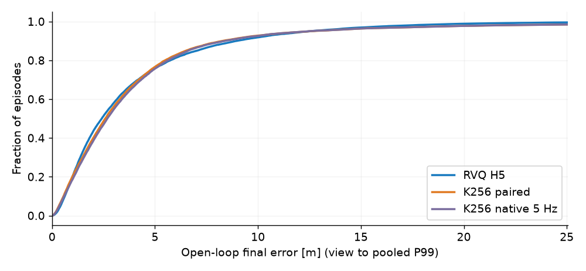
| 视图 | 观测节点 / 决策样本 | 输出 token 总数（含末帧） |
|---|---|---|
| K256 原始 5 Hz | 3,292,800 | 3,292,800 |
| K256 相同宏节点 | 3,105,927 | 3,105,927 |
| RVQ H5 宏节点 | 3,105,927 | 9,317,781 |
三个 RVQ 码共同预测五个未来绝对局部位姿，每次只执行第一个。K256 的一个码表示一次相对位姿增量。本数据多数原始步长已足够大，因此宏节点数量下降有限，RVQ 的优势主要体现在位置精度，而非输出 token 数量。
| 码本层 | 使用码数 | 运动码熵 (bit) | 困惑度 |
|---|---|---|---|
| K256 宏节点 | 195/256 | 4.407 | 21.2 |
| RVQ 第 1 层 | 217/256 | 4.284 | 19.5 |
| RVQ 第 2 层 | 255/256 | 6.750 | 107.6 |
| RVQ 第 3 层 | 256/256 | 6.619 | 98.3 |
熵与利用率只统计运动，不混入 STOP。RVQ 某一层码为 0 可是普通运动码；仅完整 [0,0,0] 为 STOP。K256 使用 uint16，避免运动 token 256 溢出成 STOP=0。
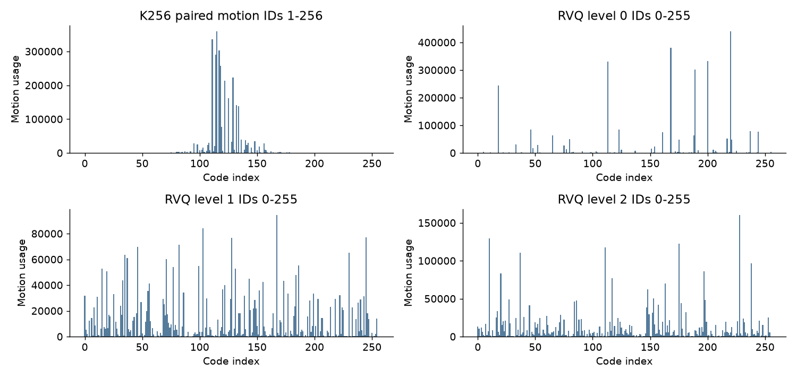
黑色为 GT、蓝色为 RVQ、橙色为 K256（相同宏节点）。浅灰线为全部源 GT。每张图只在共同 GT 首帧建立坐标，未做终点对齐、缩放或每步纠偏。
在完整宏动作集合中，RVQ 开环 ADE 至少优于 K256 1 cm 的有 12,860 条；K256 至少优于 RVQ 1 cm 的有 8,232 条。各自展示中位与较明显优势的实例，并展示双方误差较大的实例；动图不替代全量统计。

原始 GT 150 路点；RVQ 82 个保留观测节点，K256 对照也为 82 个节点（运动步均为节点数−1）。
开环 ADE：RVQ 0.46 m，K256 1.21 m；终点 FDE：0.72 / 2.85 m。GT 路程 18.4 m。
该轨迹满足完整宏动作与量化微动作约束。
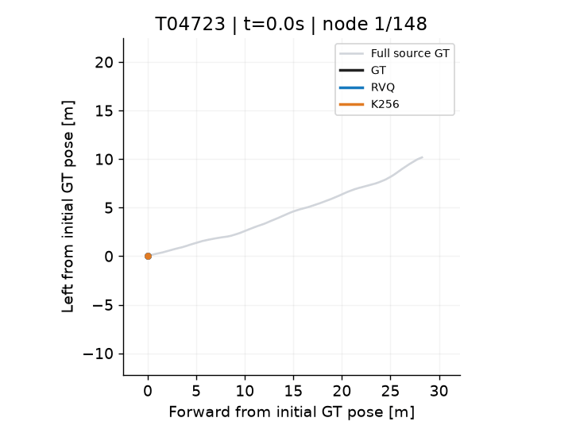
原始 GT 150 路点；RVQ 148 个保留观测节点，K256 对照也为 148 个节点（运动步均为节点数−1）。
开环 ADE：RVQ 0.68 m，K256 3.36 m；终点 FDE：1.37 / 6.50 m。GT 路程 30.2 m。
该轨迹满足完整宏动作与量化微动作约束。
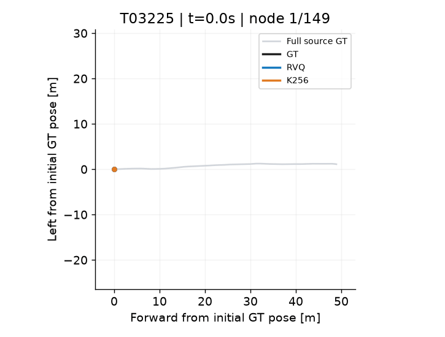
原始 GT 150 路点；RVQ 149 个保留观测节点，K256 对照也为 149 个节点（运动步均为节点数−1）。
开环 ADE：RVQ 1.30 m，K256 0.71 m；终点 FDE：3.47 / 1.40 m。GT 路程 49.0 m。
该轨迹满足完整宏动作与量化微动作约束。
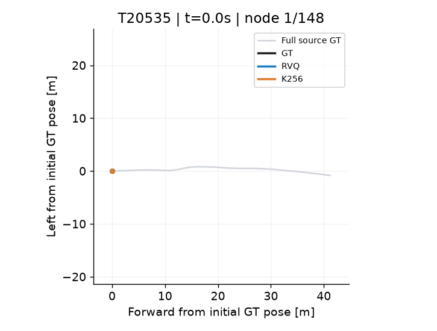
原始 GT 150 路点；RVQ 148 个保留观测节点，K256 对照也为 148 个节点（运动步均为节点数−1）。
开环 ADE：RVQ 2.98 m，K256 0.42 m；终点 FDE：7.07 / 1.19 m。GT 路程 41.4 m。
该轨迹满足完整宏动作与量化微动作约束。
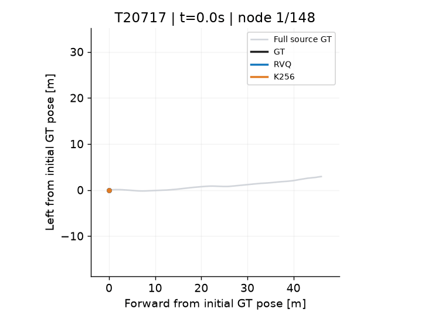
原始 GT 150 路点；RVQ 148 个保留观测节点，K256 对照也为 148 个节点（运动步均为节点数−1）。
开环 ADE：RVQ 3.86 m，K256 6.16 m；终点 FDE：14.28 / 14.97 m。GT 路程 46.2 m。
该轨迹满足完整宏动作与量化微动作约束。
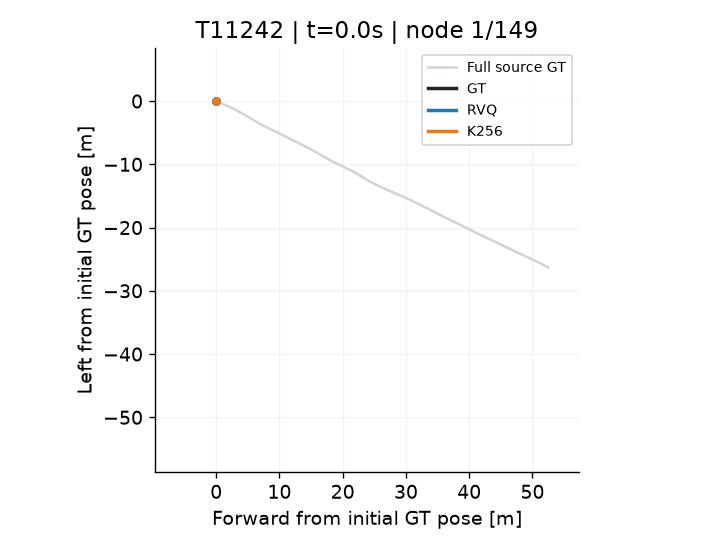
原始 GT 150 路点；RVQ 149 个保留观测节点，K256 对照也为 149 个节点（运动步均为节点数−1）。
开环 ADE：RVQ 7.67 m，K256 24.14 m；终点 FDE：23.78 / 62.08 m。GT 路程 58.7 m。
该轨迹满足完整宏动作与量化微动作约束。
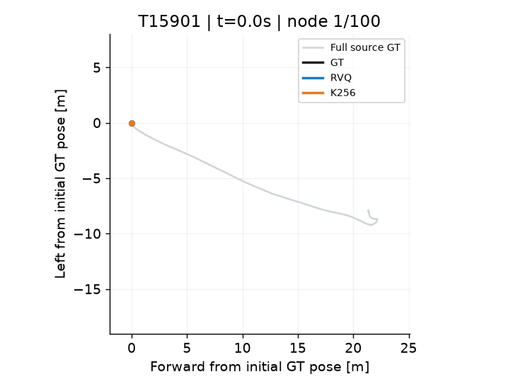
原始 GT 150 路点；RVQ 100 个保留观测节点，K256 对照也为 100 个节点（运动步均为节点数−1）。
开环 ADE：RVQ 1.09 m，K256 1.22 m；终点 FDE：2.93 / 1.67 m。GT 路程 26.1 m。
该轨迹仍有未解决微动作，全部编码保留作诊断，不计入完整宏动作子集。
RVQ 使用固定的 3×256 H5 码本和宏动作规则：保留真实记录节点，最小动作是位移 >10 cm 或转角 >10°；位置简化偏差 ≤3 cm，朝向独立单调拟合通常 ≤3°，仅必要时采用 ≤10°有界回摆；跨度上限 1.2 m / 60° / 8 秒。量化采用 beam 8，必要时 beam 32；满足 GT 规则的轨迹禁止有效相邻解码动作同时 ≤5 cm、≤5°。
平移单位“米”由提供方确认。按源方法说明使用 XZ 行走平面，转成 NWU 的 (Z,−X,−Y)，只编码平面位置和朝向，不编码高度、俯仰或翻滚。四元数按 T_world_camera 解释；该约定仍属于数据推断：与源清单切角统计的绝对差中位数为 0.101°，逆姿态解释为 4.935°，98.21% 的轨迹更支持前者，尚未由生成程序作者确认。
K256 使用固定的 HM3D/MP3D 通用码本，标称训练频率 2 Hz；这里所有节点和真实时间戳均保留，没有将 5 Hz 偷换成 2 Hz。宏节点视图用于控制采样差异，原始 5 Hz 视图用于说明直接编码的情况。未在本测试集合重新训练任一码本。
已对所有源文件做哈希核对，并检查真实节点、时间戳、STOP、RVQ 解码、局部未来点和几何规则。K256 使用既有 float32 归一化最近中心算法；独立 float64 抽核发现少量近似等距选择，误差增量均在容差内。离线量化与开环重建不代表模型闭环导航或真机执行效果。
RVQ SHA256：415dbdf0f5da122557bbdfe9db698d2bde52662b614472c53b8ee615259b2177
K256 SHA256：2b92e8d71ee24528d6d3e792a15a1b0694f7253b6758fd1fbb4d641e36880e47